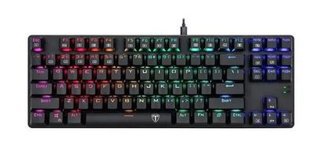

Teclado
O que você precisa saber sobre este produto
ㅤㅤㅤㅤㅤㅤㅤㅤㅤㅤㅤㅤㅤㅤㅤㅤㅤㅤㅤㅤ
- Marca: T-Dagger
- Modelo: T-TGK315
- Cor da retroiluminação: RGB
- Arquitetura: Mecânico
- Com teclas silenciosas: Não
- Tipo de switch: Outemu MK2 DIY Brown
- Quantidade de chaves: 87
- Com teclas de atalho: Sim
- Quantidade de teclas de atalho: 12